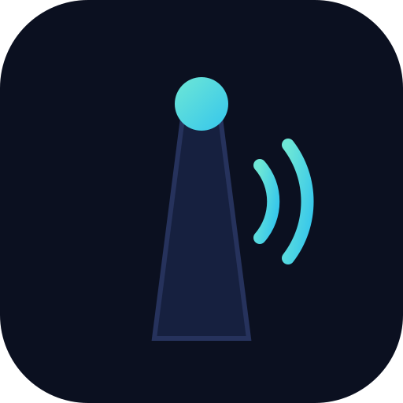

MileMuseLoading route…
– stories · – mi · witty local guide
- Mount the phone and keep the screen on.
- Turn your volume up — it talks as you pass each place.
- Everything is pre-downloaded, so it keeps playing with no signal.

MileMuse– stories · – mi · witty local guide